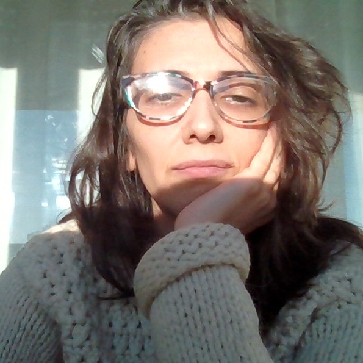

Giselle Ciardullo Lucero es una artista plástica argentina radicada en Madrid. Egresada de la Escuela Nacional de Bellas Artes Prilidiano Pueyrredón (IUNA), su producción abarca desde la pintura al óleo hasta la ilustración en tinta y diversas prácticas del arte gráfico contemporáneo.
Su obra se caracteriza por la exploración de lo simbólico y lo emocional a través del color, la materia y la línea, estableciendo un diálogo sensible entre lo íntimo y lo universal. A lo largo de su trayectoria, ha desarrollado un lenguaje visual propio donde la delicadeza pictórica convive con una mirada experimental.
Interesada en generar experiencias que inviten a la contemplación y a la resonancia personal, Ciardullo Lucero incorpora texturas, gestualidad y nuevos soportes como parte de una búsqueda constante de expansión poética y expresiva.
Un gesto de esta búsqueda —que desborda el lienzo y se vuelve cuerpo— se manifiesta en su proyecto Wearable Art. La obra se hace pequeña, íntima, cercana a la piel: anillos concebidos como diminutas esculturas portables, impresas en bioplástico y pensadas para acompañar a quien las lleva como un talismán artístico. Cada pieza viaja dentro de una caja de origami construida a mano, intervenida con una monotipia única, casi una obra visual que protege el objeto. En este cruce entre lo artesanal y lo tecnológico, entre lo que se viste y lo que se contempla, la artista invita a habitar el arte como experiencia cotidiana: que la obra no solo se mire, sino que pulse, se mueva y respire con quien la porta.